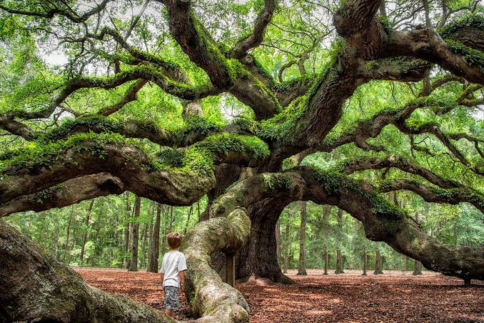

The tree is not an immutable biological category but rather a human concept based on visual criteria. Perhaps a general definition would describe a tree as a perennial woody plant that develops along a single main trunk to a height of at least 4.5 meters (15 feet) at maturity. This may be contrasted with a shrub, which might be loosely defined as a woody plant with multiple stems that is, in most cases, less than 3 meters (about 10 feet) tall. However, a species fitting the description of either in one area of the world might not necessarily do so in other regions, since a variety of stresses shape the habit of the mature plant. Thus, a given woody species may be a tree in one set of habitats within its range and a shrub elsewhere. For example, the spruce and fir may thrive in the tree form at the base of a mountain but assume a shrub form near the mountaintop, the variation due principally to stresses exerted by such environmental conditions as altitude, temperature, and oxygen tension.